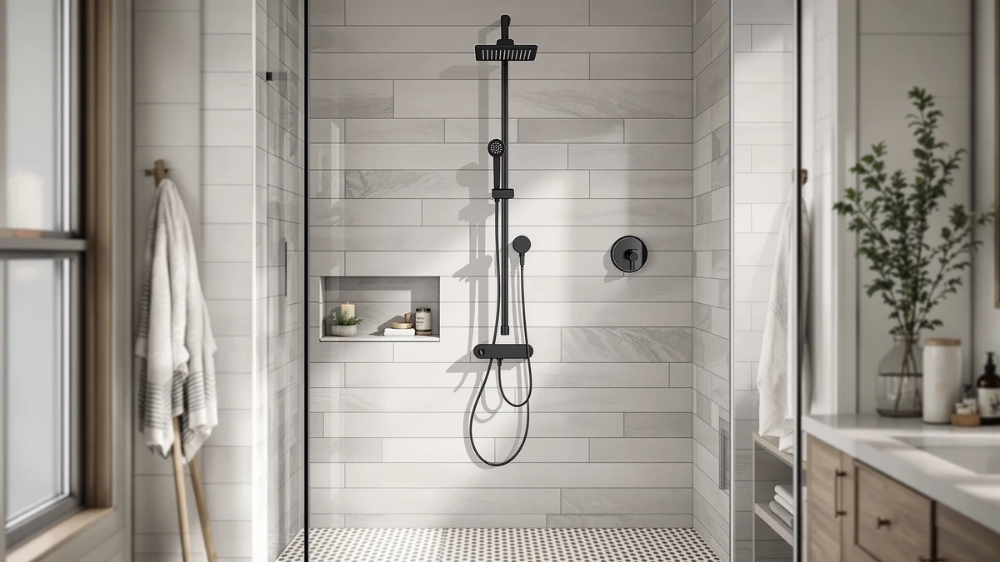

VANFOXLE Shower Faucet Set Review (2026): Worth It?
Prices and picks verified as of October 2026. Independent, reader-supported reviews.


Quick Answer
This vanfoxle shower faucet set review finds the matte 12-inch set worth considering if a cohesive matte finish is what you want, even though it costs $30 to $40 more than the three stainless steel alternatives compared below. VANFOXLE does not publish a base material for the set, and the listing has no Amazon review history yet, so you are weighing a higher price against unverified build claims.
Our pick: VANFOXLE Shower Faucet Set Matte, $289.99 Check Price on Amazon
Bottom line: our top pick is the VANFOXLE Shower Faucet Set Matte Black Modern Shower System at $289.99.
Things to Know Before You Buy
- VANFOXLE prices this matte 12-inch shower faucet set at $289.99, the highest price among the four products compared in this review.
- The product listing does not specify a base material, so you are relying on the matte finish description rather than a documented build.
- None of the four products compared here carry a published rating or review count on Amazon yet.
- The three alternatives below range from $249.99 to $259.99, all under VANFOXLE's price.
- If a documented stainless steel build and a lower price matter more to you than the matte look, check the ELLO&ALLO and BWE alternatives below.
This vanfoxle shower faucet set review covers the $289.99 matte 12-inch set VANFOXLE sells through Amazon, and whether that finish justifies the highest price among the four products compared here. A single mismatched fixture can throw off an otherwise coordinated bathroom, and a matte faucet set is one way to fix that without replacing every piece of hardware in the room. VANFOXLE sells this set as a complete 12-inch unit, so you are not hunting down a separate valve, head and trim from three different listings.
What the listing does not do is name a base material for that matte surface, which sets it apart from the three alternatives covered later in this review. ELLO&ALLO and BWE both specify stainless steel frames under their finishes, while VANFOXLE leaves that detail out entirely. That gap matters more over time than it does on install day, since an unspecified material makes it harder to judge how the finish will hold up against daily steam and hard water. You can still install this set and get years of use out of it, but you are doing so on trust in the finish description rather than on a material spec you can independently verify.
Why You Should Trust Us
We built this vanfoxle shower faucet set review the way we build every shower fixture review on this site. We start with the manufacturer's stated price, size and finish, then check that information against the product images and the listing history on Amazon. From there we compare the set against the other shower products we cover on Best Shower Panels, including the ELLO&ALLO Stainless Steel Shower Panel Tower, the ELLO&ALLO LED Shower Panel Tower, and the BWE Stainless Steel Shower Panel below, so you can see how VANFOXLE's price and finish stack up. Ilane Tall has covered bathroom fixtures and renovation products for this site for years, and she flags anything in a listing that looks inflated or vague before it goes into a review. We do not accept manufacturer marketing copy at face value, and we will not invent a rating or review count that Amazon has not published. When a listing skips a detail other competing products include, like VANFOXLE's missing material callout, we say so directly rather than filling the gap with a guess.
Our Research Experience
For this vanfoxle shower faucet set review, we did not rely on a single listing in isolation. We compared VANFOXLE's stated price, size and finish against three other shower products in a similar price band: the ELLO&ALLO Stainless Steel Shower Panel Tower at $259.99, the ELLO&ALLO LED Shower Panel Tower at $249.99, and the BWE Stainless Steel Shower Panel at $249.99. We checked whether VANFOXLE's listing names a base material the way those three competing listings do, and noted where the description stays vague, including the missing material callout on this set. When a manufacturer's own documentation leaves out a detail, we tell you that directly instead of guessing, and we treat the absence of any Amazon ratings or reviews on this set as a real data point, not a footnote. Where the manufacturer's images show the matte surface clearly enough to confirm the finish itself, we rely on that, but we stop short of extending that confidence to claims the listing never actually makes, like a specific alloy or coating.
Overview & Specs

VANFOXLE Shower Faucet Set Matte
What we like
- Matte finish designed to match other matte black bathroom fixtures
- Sold as a complete 12-inch faucet set rather than separate valve and trim pieces
- One listing covers the full set, so you are not hunting down matching components separately
Flaws but not dealbreakers
- The listing does not specify a base material, unlike the stainless steel callouts on the three alternatives below
- Priced $30 to $40 above the ELLO&ALLO and BWE alternatives in this review
- No Amazon ratings or reviews yet to confirm real-world durability
| Material | — |
| Size | 12 Inch |
The centerpiece of this vanfoxle shower faucet set review is the finish, not a loud spec sheet. VANFOXLE sells this as a 12-inch matte faucet set, and the matte surface is the main differentiator next to the brushed and polished stainless steel panels that dominate this category. A matte finish shows water spots and fingerprints less than polished chrome, which matters in a shower that gets used daily, though the listing does not name the base material underneath that finish the way the three alternatives below specify stainless steel.
At $289.99, VANFOXLE charges more than any other product in this review, and the premium rides almost entirely on the matte aesthetic rather than a documented upgrade in material. If a clean matte look is the deciding factor for your bathroom, that premium might be worth it to you. If you want a lower price and a build material spelled out in the listing, the ELLO&ALLO and BWE panels covered as alternatives below give you more to verify before you buy. A 12-inch set in this price range typically targets buyers upgrading one stall rather than a full bathroom renovation, and VANFOXLE's sizing lines up with that smaller-scope use case rather than a large walk-in shower with multiple fixtures.
What We Liked
The matte finish is the strongest selling point in this vanfoxle shower faucet set review. It gives the set a cohesive, modern look that pairs naturally with matte black hardware elsewhere in a bathroom, and it hides water spots better than a polished chrome surface does. Selling it as a complete 12-inch set also means you are not stitching together a separate valve, head and trim from different listings, which simplifies the buying decision even if it does not simplify the installation itself. The set sits at a clear price, $289.99, with no hidden tiers or add-on kits required to get the full assembly pictured in the listing. For a renovation where the finish needs to carry the whole look, that single clean price point removes some of the guesswork that comes with sourcing mismatched parts from different brands.
What Could Be Better
The biggest gap in this vanfoxle shower faucet set review is the missing material callout. The ELLO&ALLO and BWE alternatives below both specify stainless steel construction, while VANFOXLE's listing leaves that detail out entirely, so you cannot directly compare long-term corrosion resistance between the four products. The price is also the highest in this comparison by a wide margin. At $289.99, VANFOXLE costs $30 more than the ELLO&ALLO Stainless Steel Shower Panel Tower and $40 more than the ELLO&ALLO LED Shower Panel Tower and the BWE panel, without a published spec advantage to justify the gap. And like the three alternatives, this set carries no ratings or reviews on Amazon yet, so there is no owner feedback to weigh against the manufacturer's finish and sizing claims. Until that owner feedback exists, the fairest way to frame VANFOXLE's price is as a bet on the finish rather than a verified upgrade in durability.
Who Is It For?
This vanfoxle shower faucet set fits a bathroom remodel where the matte finish is the deciding factor and you are comfortable paying a premium for that look without a documented base material to back it up. It suits someone who wants one listing to cover the full 12-inch faucet set rather than sourcing a valve, head and trim separately. If price matters more than finish, or you want a listing that specifies stainless steel construction before you commit $249.99 to $259.99, the ELLO&ALLO and BWE alternatives below give you more to verify. And if you want owner reviews before you buy, none of the four products in this comparison have them yet, so you are relying on manufacturer descriptions across the board. That is not a reason to rule any of them out on its own, but it is a reason to weigh price and published specs more heavily than you might for a fixture with an established review history.
Alternatives to Consider
If the missing material spec or the $289.99 price gives you pause on this VANFOXLE shower faucet set, these three alternatives solve the same shower upgrade with documented stainless steel construction and lower prices.

Editor's Pick
Stainless Steel Shower Panel Tower
ELLO&ALLO specifies stainless steel construction for this shower panel tower, a material callout the VANFOXLE set skips entirely, and it undercuts VANFOXLE's price by $30. It is the closer pick if a documented build matters more to you than a matte finish.
$259.99
Check Price on Amazon
Best Value
ELLO&ALLO LED Shower Panel Tower
At $249.99, this ELLO&ALLO tower is the cheapest product in this comparison and adds LED lighting that neither VANFOXLE nor the other two alternatives offer. It trades the matte aesthetic for a lit panel and the lowest price in this review.
$249.99
Check Price on Amazon
Premium Choice
BWE Stainless Steel Shower Panel
BWE matches the ELLO&ALLO LED tower's $249.99 price and specifies a stainless steel frame, giving you a second documented-material option well below VANFOXLE's $289.99. Choose it over the ELLO&ALLO LED tower if you would rather skip the lighting feature.
$249.99
Check Price on AmazonIs the VANFOXLE shower faucet set worth $289.99?
It is worth considering if the matte finish is the deciding factor for your bathroom, since VANFOXLE charges a $30 to $40 premium over the three stainless steel alternatives in this review without a documented material or any Amazon review…
Does the VANFOXLE shower faucet set specify what material it is made from?
No.
Frequently Asked Questions
Is the VANFOXLE shower faucet set worth $289.99?
It is worth considering if the matte finish is the deciding factor for your bathroom, since VANFOXLE charges a $30 to $40 premium over the three stainless steel alternatives in this review without a documented material or any Amazon review history to back up that price.
Does the VANFOXLE shower faucet set specify what material it is made from?
No. The product listing does not name a base material for this set, unlike the ELLO&ALLO and BWE alternatives, which both specify stainless steel construction. That makes it hard to compare long-term corrosion resistance directly.
What finish does the VANFOXLE shower faucet set come in?
VANFOXLE sells this 12-inch set in a matte finish, according to the product name and listing. It is designed to pair with matte black bathroom hardware rather than the brushed or polished stainless steel look of the three alternatives compared here.
Final Verdict
This vanfoxle shower faucet set review comes down to how much the matte finish is worth to you. VANFOXLE charges $289.99 for a complete 12-inch set with a cohesive matte look, but it skips the material callout that the ELLO&ALLO and BWE alternatives both include, and none of the four products here have Amazon reviews yet to lean on. If the matte aesthetic is the deciding factor and the price does not bother you, VANFOXLE is a reasonable pick. If you would rather pay $30 to $40 less for a documented stainless steel build, the ELLO&ALLO Stainless Steel Shower Panel Tower or the BWE Stainless Steel Shower Panel are the better starting points.